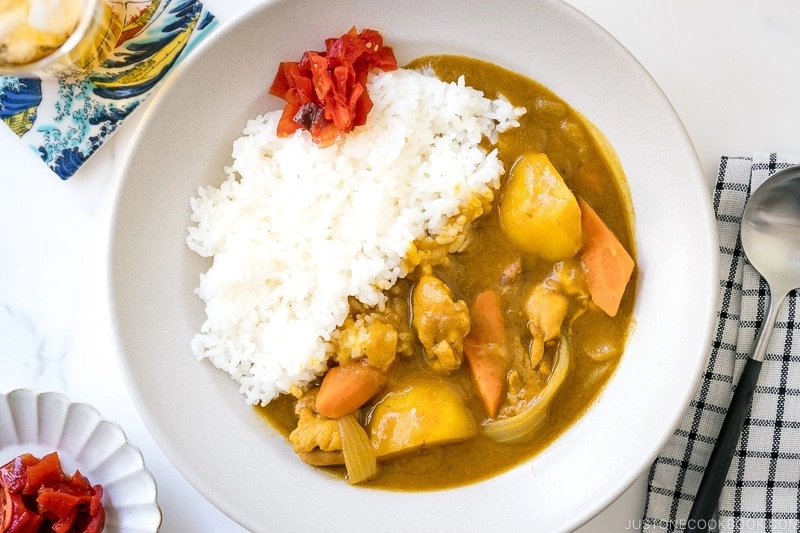

Japanese Curry Recipe

Description
This is a great curry recipe I got from justonecookbook.com.
I've used many recipes from this website before, but this one is still my favorite.
This dish is filled with many different vegetables and wonderful flavors!
Ingredients
- 1 1/2lbs Boneless, Skinless Chicken Thighs
- 2 Carrots
- 2 Onions
- 3 Potatoes
- 1 tsp Grated Ginger
- 2 Cloves Garlic
- 1 Apple
- 1 1/2 Tbsp Vegetable Oil
- 4 Cups Chicken Stock
- 1 Tbsp Honey
- 1 Tbsp Soy Sauce
- 1 Tbsp Ketchup
- 8 oz Package Japanese Curry Roux (I use Golden Curry)
- Salt & Pepper to Taste
Recipe
- Sauté chopped onions in vegetable oil over medium heat until caramelized.
- Add crushed garlic and ginger, then diced chicken into pot until browned.
- Add grated apple, honey, soy sauce and ketchup, then stir till combined.
- Add chopped potatoes and carrots, then simmer while covered for 30 minutes.
- Slowly laddle in small cubes of the curry roux, until they are full incorporated.
- Finally, salt and pepper to taste and serve with a Japanese short grain rice.